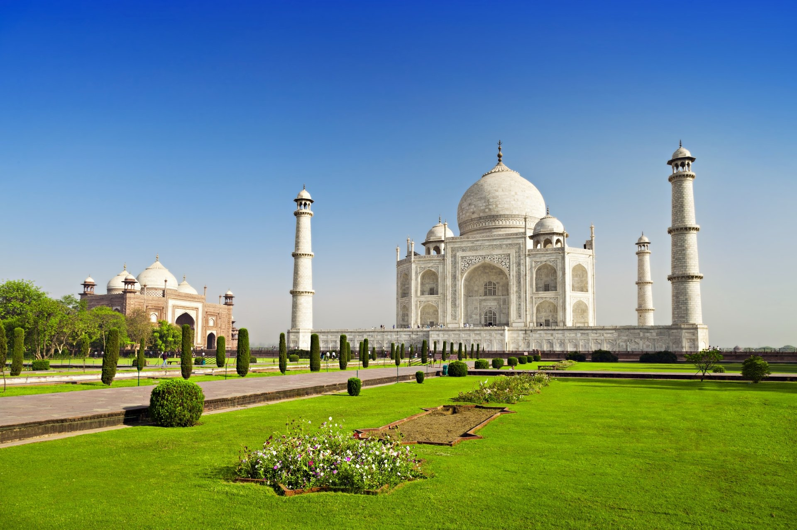

Myths about Tajmahal
 |
 |
Ever since its construction, the building has been the source of an admiration transcending culture and geography, and so personal and emotional responses have consistently eclipsed scholastic appraisals of the monument.[72] A longstanding myth holds that Shah Jahan planned a mausoleum to be built in black marble as a Black Taj Mahal across the Yamuna river.[9] The idea originates from fanciful writings of Jean-Baptiste Tavernier, a European traveller who visited Agra in 1665. It was suggested that his son Aurangzeb overthrew Shah Jahan before it could be built. Ruins of blackened marble across the river in the Mehtab Bagh, seemed to support this legend. However, excavations carried out in the 1990s found that they were discoloured white stones that had turned black.[73] A more credible theory for the origins of the black mausoleum was demonstrated in 2006 by archaeologists who reconstructed part of the pool in the Mehtab Bagh. A dark reflection of the white mausoleum could clearly be seen, befitting Shah Jahan's obsession with symmetry and the positioning of the pool itself. Warrior Empire: The Mughals of India. A+E Television Network. 2006.
No concrete evidence exists for claims that describe, often in horrific detail, the deaths, dismemberments and mutilations which Shah Jahan supposedly inflicted on various architects and craftsmen associated with the tomb.[74][75] Some stories claim that those involved in construction signed contracts committing themselves to have no part in any similar design. Similar claims are made for many famous buildings.[76] No evidence exists for claims that Lord William Bentinck, governor-general of India in the 1830s, supposedly planned to demolish the Taj Mahal and auction off the marble. Bentinck's biographer John Rosselli says that the story arose from Bentinck's fund-raising sale of discarded marble from Agra Fort.[77]
Another myth suggests that beating the silhouette of the finial will cause water to come forth. To this day, officials find broken bangles surrounding the silhouette.[78]
Several myths, none of which are supported by the archaeological record, have appeared asserting that people other than Shah Jahan and the original architects were responsible for the construction of the Taj Mahal. For instance, in 2000, India's Supreme Court dismissed P. N. Oak's petition[79] to declare that a Hindu king built the Taj Mahal.[76][80] In 2005, a similar petition was dismissed by the Allahabad High Court. This case was brought by Amar Nath Mishra, a social worker and preacher who claimed that the Taj Mahal was built by the Hindu King Parmal Dev in 1196.[81]
Another such unsupported theory is that the Taj Mahal was designed by an Italian, Geronimo Vereneo, held sway for a brief period after it was first promoted by Henry George Keene in 1879 who went by a translation of a Spanish work Itinerario, (The Travels of Fray Sebastian Manrique, 1629–1643). Another theory that a Frenchman, Austin of Bordeaux designed the Taj was promoted by William Henry Sleeman based on the work of Jean-Baptiste Tavernier. These ideas were revived by Father Hosten and discussed again by E.B. Havell and served as the basis for subsequent theories and controversies